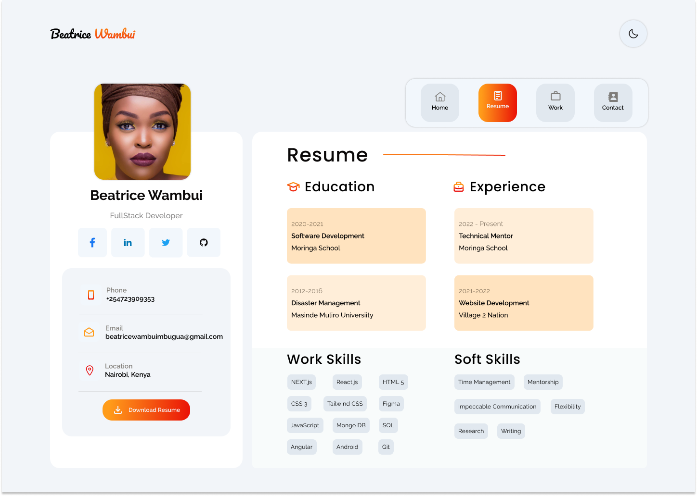
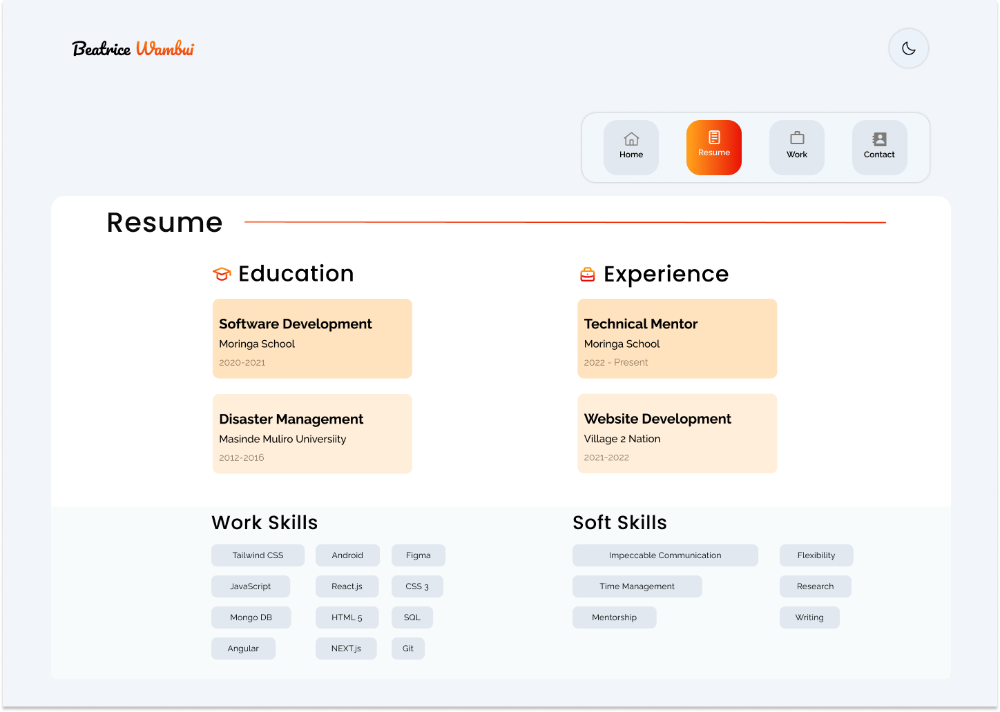

Figma Portofolio Redesign


Design Rationale
- removed the section with her personal and professional details since they are already in the Home
panel
in order to prevent the Resume from being too crowded and keep the focus on her experience
- changed the colors of the events, the recent events in both categories have a darker shade of
orange,
while older events are lighter, so the timeline is easier to follow and makes the overall panel more
structured than before (no clear reasoning behind the original color choice)
- aligned and organized the skills to create a cleaner and structured layout
- changed the event format from Time-> Position-> Place to Position-> Place-> Time to highlight her
roles,
also adjusted the size and boldness to establish a clear visual hierarchy of information
References:
Go back to the main page